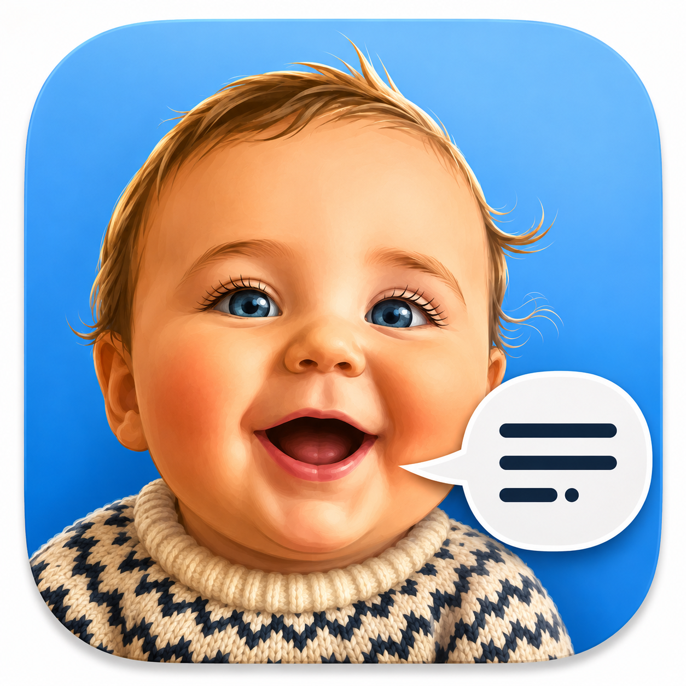

George’s Words
Hold a key. Say what you want to write. When you let go, clean punctuated text lands right where you were typing.
Your voice never leaves your Mac. Transcription and cleanup run entirely on your computer. No cloud, no account, no data collection of any kind. That's the whole privacy policy.
Download for MacRequires a Mac with Apple Silicon (M1 or newer) and macOS 14 or later. Free.
Installing takes a minute
- Open the downloaded file and drag George's Words into Applications.
- Open it. A short welcome tour sets up everything, including the two one-time downloads it needs (about 1.6 GB).
- Hold the fn key anywhere you can type, and talk.